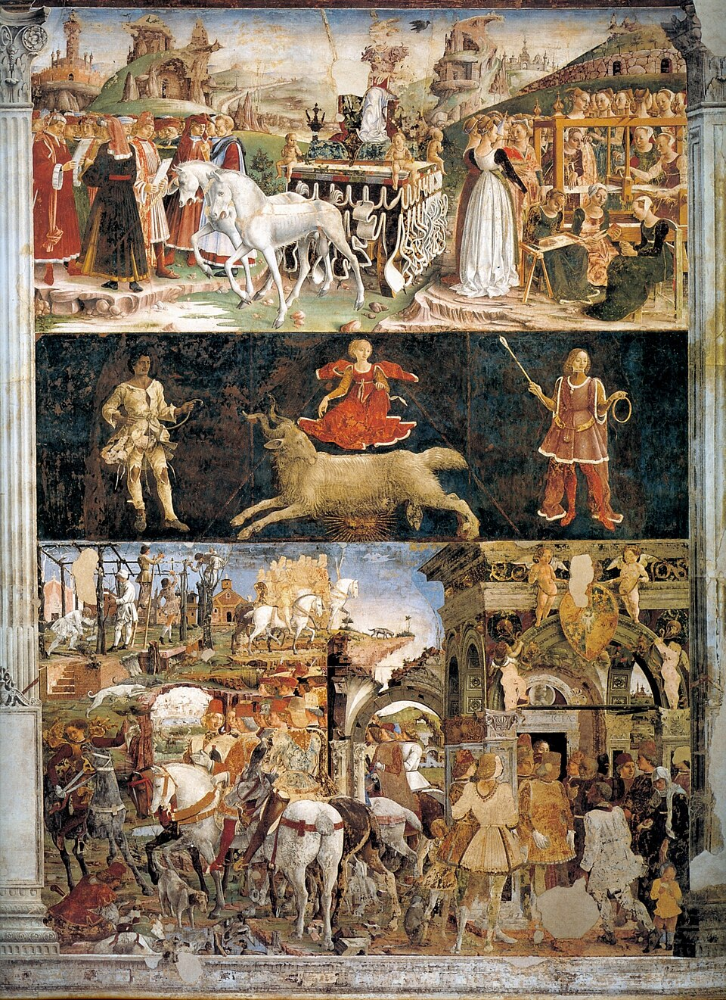

Extant art evidence
- Worn by
- Men
- Regions
- All Italian regions
This is the big visible male garment below the doublet.
Citation: Francesco del Cossa, March, Hall of the Months, Palazzo Schifanoia, Ferrara, 1469–1470. Public domain reproduction via Wikimedia Commons.